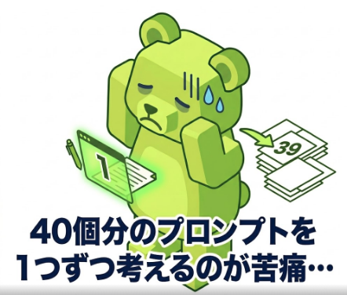
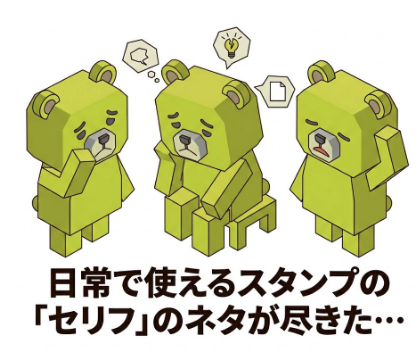
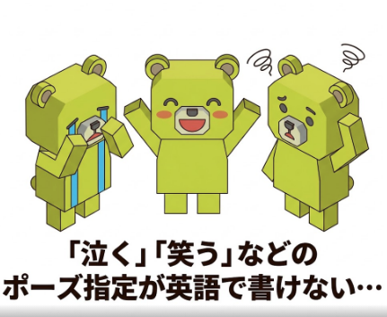

キャラクター設定と画風を選ぶだけで、画像生成AI用の精巧な英語プロンプトを大量に自動作成。セリフやポーズも完璧に指定されたプロンプトで、LINEスタンプ制作の時間を圧倒的に短縮します。また、一回利用の文字にそったポーズ画像が作れます！
今すぐ無料で試してみる
画像生成AI（GeminiやMidjourneyなど）に「どんな画像を描いてほしいか」を伝えるための指示文（呪文）のことです。
AIは英語の指示を最も正確に理解するため、本ツールでは理想のスタンプを作るための精巧な英語プロンプトを自動生成します。

😩 40個分のプロンプトを
🤔 日常で使えるスタンプの
😟 「泣く」「笑う」などのLINEスタンプ1セット分（最大40個）のプロンプトをボタン1つで瞬時に生成。1つずつAIに指示を考える膨大な時間をカットします。
「アニメスタイル」「水彩画」「3Dレンダリング」「ドット絵」など、選んだ画風や質感が全てのプロンプトに自動で反映されます。
日常会話から感情、ネットスラングまで。選んだセリフに合わせて、AIが描くキャラクターの「表情」や「ポーズ」まで自動的に指定されます。
あなたが入力するのはこれだけ👇
AIへ指示するプロンプトが自動完成👇
左パネル上部の「キャラクター説明」に、ベースとなるキャラの特徴（例：丸くてふわふわした白いウサギ）を入力します。手持ちの画像を使いたい場合は、空欄でOKです。次に、イラストや3Dなどの「ビジュアルスタイル」を選択します。
「スタンプ」「メイン画像」「タブ画像」から用途を選択します。画像サイズのアスペクト比が自動で調整されます。さらに、生成したい個数（最大40個）と、画像内にテキスト（文字）を含めるかどうかを選択します。
「厳選セリフ」一覧から、スタンプにしたい言葉をクリックして選びます。「↺ 入替」ボタンで日常系やトレンド系など別のセリフ群に切り替えることも可能です。オリジナルの言葉を使いたい場合は「カスタム入力」から追加してください。
準備ができたら、赤い「プロンプトを一括生成」ボタンをクリック！数秒で右側のエリアに英語のプロンプトがリストアップされます。
プロンプトが表示されたら、『▶︎順番にコピー』または「コピー」ボタンを押します。
Google Gemini を起動して、「画像を作成」を押します。
コピーしたプロンプトを「貼り付ける」「実行する」の順で操作します。
※手元画像を使いたい場合は添付してください。
できた画像を長押しでコピーしてLINEチャットに貼り付けてみてください。すぐに送信して楽しむことができます。
作成した画像をスタンプとして正式に登録・販売したい場合は、以下の公式ページから手続きを行ってください。
LINEスタンプ作成のページへ